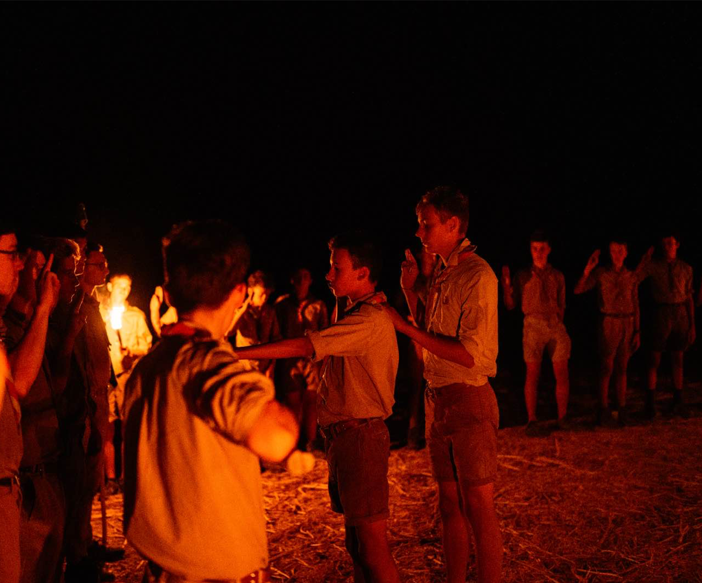
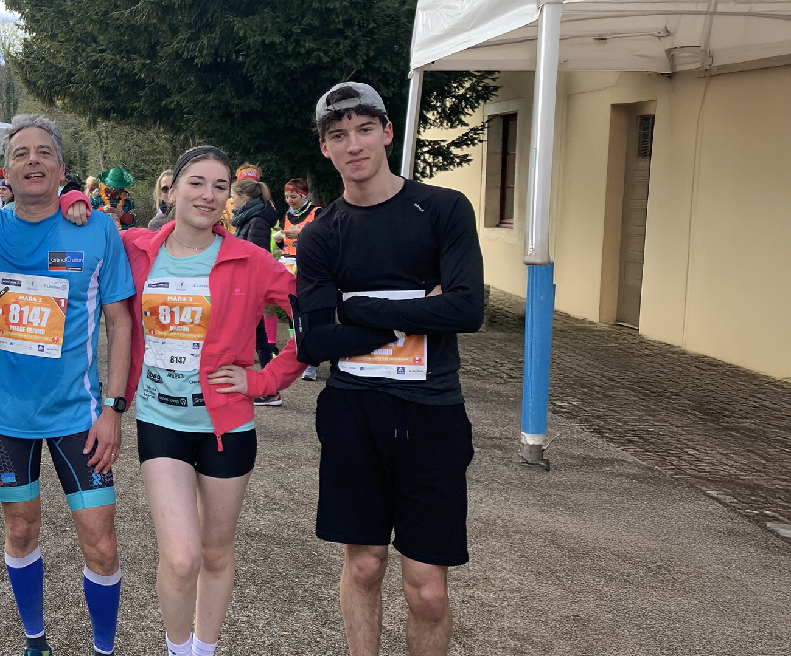
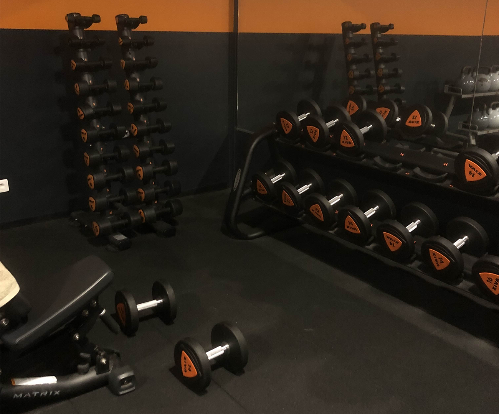

SPORT
En plus d'être programmeur, voici mon parcours sportif

De mes 8 à 15 ans, j'ai été Scout unitaire de France
Cela m'a appris tant de chose : l'esprit d'équipe, le partage, l'écoute de l'autre, se débrouiller dans la nature, etc...
A partir de 16 ans j'ai découvert la course à pied
J'ai commencé en club mais désormais je cours seulement hors club
La course à pied a toujours été un moyen de se sentir en bonne santé et de libérer de la bonne dopamine,
en plus d'améliorer son endurance


Depuis mes 16 ans, je fais du renforcement musculaire
Mon objectif : prendre du muscle, je vais à la salle de sport environ 3 fois par semaine, et après chaque séance, je me sens extrêment bien !